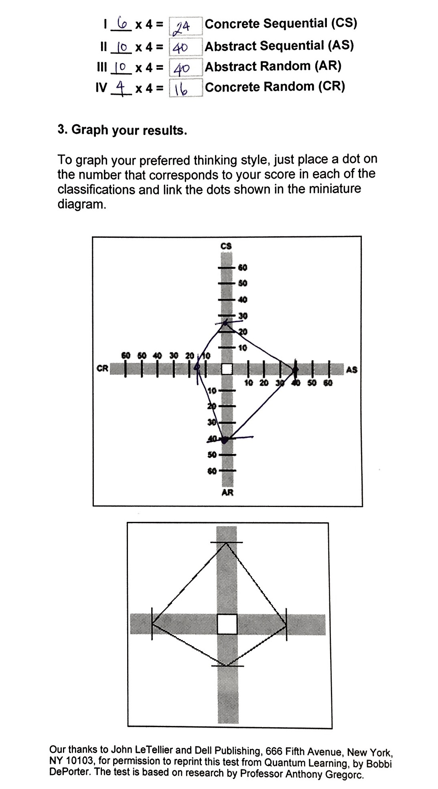

Post

by Santa Maria, Steven * July 24, 2015
I'm a big fan of multiplier effects--that is, to get a multiplied, more effective outcome from a minimum input. In this respect, the image that comes to mind is of a man pushing a jagged rock uphill versus pushing one downhill. Naturally the latter is preferable especially in the face of learning a brand new skill such as programming.
In the journey towards getting the rock downhill, I recently took a test that helps me better understand my thinking patterns according to the "Gregorc Thinking Style."
My results: I am both an Abstract Sequential and Abstract Random Thinker
{kind=link}
So far in my Phase 0 course, I can connect with the notion that I thrive and learn best in healthy relationships and can have access to experts. It also helps to be in stimulating environments to keep my motivation and energy up.
I'm realizing, however, that I'm missing some of those above elements. This is probably because the course is still in the "remote" phase with few opportunities to meet other students save for the pairing sessions. Perhaps there are others in SF who need that conducive group environment as I do. If we can solve this missing component, my guess is that this will promote the "growth mindset" and restrict the "fixed mindset" from sinking in.